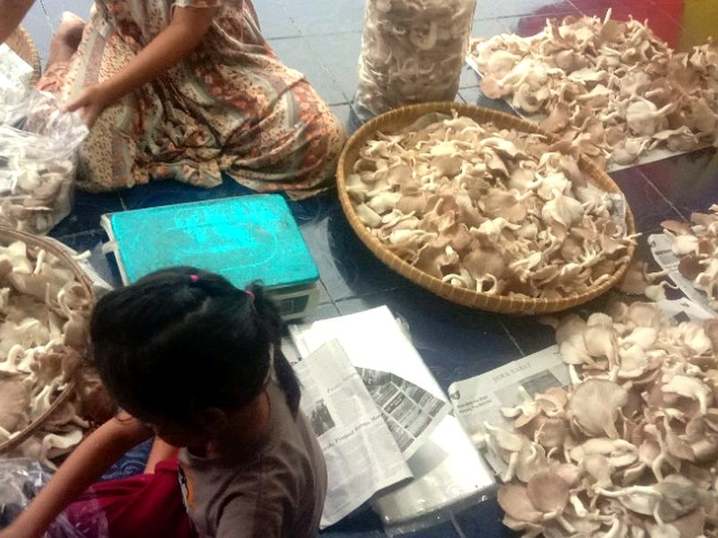

Dari Budidaya,
Tumbuh Menjadi Peluang.
Waroeng Jamur Mang Yayat merupakan usaha budidaya jamur tiram yang telah berkembang sejak 2019. Kami percaya bahwa pertanian bukan sekadar menghasilkan produk, tetapi juga menciptakan peluang, membangun kemandirian, dan memberikan manfaat ekonomi bagi masyarakat.
Tumbuh Bersama Alam,
Menghadirkan Jamur Tiram Berkualitas.
Berawal dari kecintaan terhadap dunia pertanian, dan dengan semangat serta ketekunan, kami terus mengembangkan usaha untuk menghadirkan jamur tiram segar sekaligus memperkenalkan potensi budidaya jamur sebagai peluang usaha yang menjanjikan.
Berawal dari Satu Langkah,
Bertumbuh untuk Masa Depan Pertanian.
Berbekal pengalaman dan semangat untuk berkembang, kami berkomitmen membangun usaha pertanian yang produktif, berkelanjutan, dan memiliki nilai tambah. Kami ingin menjadikan budidaya jamur tiram bukan hanya sebagai kegiatan usaha, tetapi juga sebagai bagian dari pengembangan potensi agribisnis lokal.
Berawal dari Satu Langkah, Bertumbuh untuk Masa Depan Pertanian
Sejak 2019, Waroeng Jamur Mang Yayat terus menapaki perjalanan dalam dunia budidaya jamur tiram. Berbekal pengalaman dan semangat untuk berkembang, kami berkomitmen membangun usaha pertanian yang produktif, berkelanjutan, dan memiliki nilai tambah. Kami ingin menjadikan budidaya jamur tiram bukan hanya sebagai kegiatan usaha, tetapi juga sebagai bagian dari pengembangan potensi agribisnis lokal di Tasikmalaya dan sekitarnya.
Mengenal lebih dalam potensi budidaya jamur tiram.
Mengutamakan kualitas pemeliharaan & hasil panen.
Mendukung pelaku kuliner, pasar & petani mitra.
Tentang Waroeng Jamur Mang Yayat
Mengenal lebih dekat perjalanan, nilai usaha, sejarah berdiri sejak 2019, serta visi dan misi kami.

Mengenal Lebih Dekat Waroeng Jamur Mang Yayat
Waroeng Jamur Mang Yayat merupakan usaha yang bergerak dalam bidang pertanian, khususnya budidaya jamur tiram (Pleurotus ostreatus). Berdiri sejak tahun 2019, usaha ini dikembangkan dengan semangat untuk memperkenalkan dan mengembangkan potensi budidaya jamur sebagai salah satu sektor agribisnis yang memiliki peluang besar.
Kami menjalankan kegiatan budidaya dengan memperhatikan proses pemeliharaan, kondisi lingkungan tumbuh, serta penanganan hasil panen agar jamur tiram dapat tumbuh dan menghasilkan produk yang baik. Melalui pengalaman yang terus berkembang, Waroeng Jamur Mang Yayat berupaya membangun usaha yang tidak hanya berorientasi pada hasil produksi, tetapi juga mengutamakan kualitas, kepercayaan, dan hubungan baik dengan pelanggan maupun mitra usaha.
"Kami percaya bahwa keberhasilan sebuah usaha pertanian dibangun melalui proses yang konsisten, kerja keras, inovasi, dan komitmen untuk terus belajar."
Perjalanan yang Dimulai Sejak Tahun 2019
Waroeng Jamur Mang Yayat memulai perjalanan usahanya pada tahun 2019 dengan mengembangkan kegiatan budidaya jamur tiram. Ketertarikan terhadap dunia pertanian dan potensi ekonomi jamur tiram menjadi salah satu landasan dalam membangun usaha ini.
2019 – Awal Perjalanan
Memulai usaha dan mengenal lebih dalam potensi budidaya jamur tiram melalui proses belajar persiapan media tanam dan pengaturan ruang budidaya.
Pengembangan Budidaya
Membangun pengalaman melalui proses pemeliharaan, perawatan baglog, dan pemanenan jamur tiram secara konsisten.
Penguatan Usaha
Terus mengembangkan pengelolaan budidaya dan menjaga kualitas hasil produksi agar selalu prima saat diterima pelanggan.
Melangkah ke Masa Depan
Memperluas peluang usaha, membangun kemitraan pasokan kuliner, dan memperkenalkan potensi jamur tiram kepada masyarakat luas.
Visi Waroeng Jamur Mang Yayat
"Menjadi usaha budidaya jamur tiram yang produktif, berkualitas, terpercaya, dan berkelanjutan serta mampu memberikan kontribusi positif bagi pengembangan sektor pertanian dan agribisnis Indonesia."
Misi Waroeng Jamur Mang Yayat
Kesabaran, Ketelitian, dan Konsistensi
Bagi Waroeng Jamur Mang Yayat, setiap proses budidaya memiliki arti penting. Kami menyadari bahwa membangun usaha pertanian membutuhkan kesabaran, ketelitian, dan konsistensi. Oleh karena itu, kami berkomitmen untuk terus belajar, meningkatkan kualitas pengelolaan budidaya, menjaga kepercayaan pelanggan, serta mengembangkan potensi usaha agar mampu tumbuh bersama masyarakat.
Mengapa Memilih Waroeng Jamur Mang Yayat?
Kami memahami bahwa kepercayaan pelanggan dibangun melalui kualitas produk, pelayanan, dan konsistensi dalam menjalankan usaha. Dengan pengalaman budidaya sejak tahun 2019, kami terus berupaya memberikan nilai terbaik bagi pelanggan dan mitra.
Berpengalaman Sejak 2019
Memiliki perjalanan dan pengalaman bertahun-tahun dalam menjalankan kegiatan budidaya jamur tiram secara konsisten.
Fokus pada Budidaya Jamur
Menjalankan usaha dengan dedikasi penuh pada pengembangan dan pengelolaan budidaya jamur tiram (Pleurotus ostreatus).
Mengutamakan Kualitas
Memperhatikan proses budidaya, kebersihan kumbung, dan penanganan hasil panen untuk menjaga mutu jamur tetap segar.
Terbuka terhadap Kemitraan
Mendorong peluang kerja sama dengan pelanggan, pedagang, pelaku kuliner, hotel, restoran, dan calon mitra budidaya.
Pelayanan Ramah & Tanggung Jawab
Mengedepankan komunikasi yang baik, keramahan khas Sunda, dan hubungan kemitraan jangka panjang dengan pelanggan.
Manfaat Sehat Jamur Tiram untuk Tubuh
Superfood nabati kaya serat, asam amino esensial, dan penguat imunitas.
Imunitas & Antioksidan Alami
Mengandung beta-glukan dan ergothioneine yang aktif memperkuat sistem kekebalan tubuh dari radikal bebas.
Pencernaan Sehat & Nyaman
Serat prebiotik alami ramah mikrobioma usus dan membantu penyerapan nutrisi makanan tanpa membebani lambung.
Bebas Kolesterol & Rendah Kalori
Sumber protein nabati murni tanpa lemak jenuh untuk menjaga berat badan ideal dan kesehatan jantung keluarga.
Menghadirkan Produk Budidaya Jamur Tiram
Waroeng Jamur Mang Yayat berfokus pada pengembangan produk dan kebutuhan yang berkaitan dengan budidaya jamur tiram, baik untuk kebutuhan pangan maupun sarana budidaya.
1. Jamur Tiram Segar
Jamur tiram hasil budidaya yang dipetik segar fajar dari kumbung Kawalu, bebas bahan kimia sintetis untuk kebutuhan konsumsi harian, pedagang pasar, resto, dan hotel.
2. Baglog Jamur Tiram
Media tanam steril siap tumbuh berbuah dengan persebaran miselium 100%. Diformulasi dari serbuk kayu sengon pilihan, dedak, dan kalsium terfermentasi sempurna.
3. Produk & Kebutuhan Budidaya
Kebutuhan penunjang budidaya jamur dan produk olahan krispi sehat rendah minyak (spinner), serta paket kumbung mini edukasi keluarga untuk hobi di rumah.
4. Pelatihan dan B2B (Business-to-Business)
Pembinaan petani milenial bersama narasumber tutor Dinas Pertanian Kab. Tasikmalaya, penerimaan kunjungan studi kasus akademisi & mahasiswa, serta kemitraan budidaya.
5. Bibit Jamur F0, F1, F2
Bibit kultur murni indukan unggul hasil isolasi jaringan steril (F0 pada media PDA, F1 & F2 pada botol biji jagung) berdaya tumbuh cepat, kuat, dan bebas kontaminasi.
Mari Tumbuh dan Berkembang Bersama Kami!
Apakah Anda membutuhkan pasokan jamur tiram segar untuk usaha kuliner, ingin mengenal lebih jauh teknik budidaya jamur tiram, atau tertarik menjalin kerja sama usaha?
Waroeng Jamur Mang Yayat terbuka untuk menjalin hubungan dan kemitraan dengan berbagai pihak—mulai dari pedagang pasar, pengelola resto & kafe, hingga calon petani pembudidaya—demi mengembangkan potensi agribisnis jamur tiram di Indonesia.
Mitra Usaha Kuliner & Resto
Pasokan teratur jamur tiram segar kualitas super dengan jadwal antar pasti setiap pagi.
Mitra Pedagang Pasar
Harga grosir bersaing untuk pedagang sayur eceran dan pasar induk wilayah Priangan Timur.
Mitra Petani Pembudidaya
Pengadaan media baglog siap berbuah, bimbingan teknis, dan opsi penyerapan hasil panen.
Akademisi & Riset Kampus
Kumbung kami terbuka sebagai sarana studi agribisnis dan penelitian pertanian universitas.
Rujukan Studi Lapangan & Wawancara Tugas Kampus Mahasiswa
Dalam berbagai kesempatan, Waroeng Jamur Mang Yayat selalu didatangi oleh kelompok mahasiswa dari berbagai kampus terkemuka di Kota Tasikmalaya (seperti Universitas Siliwangi dan perguruan tinggi lainnya). Kumbung dan rumah produksi kami kerap menjadi rujukan utama untuk sesi wawancara langsung serta studi kasus terkait manajemen rantai pasok jamur tiram, formulasi media tanam presisi, hingga analisis kelayakan ekonomi agribisnis rakyat.
Keterbukaan kami dalam berbagi ilmu dan transparansi proses budidaya menjadikan Waroeng Jamur Mang Yayat tempat belajar yang ramah dan solutif bagi mahasiswa dalam menyelesaikan tugas kuliah, penelitian tugas akhir, maupun laporan observasi lapangan. Hal ini menegaskan bahwa integritas mutu panen fajar, ketepatan sterilisasi media baglog, dan strategi pemasaran kami benar-benar aplikatif dan relevan dipelajari generasi muda.

Sesi diskusi & wawancara tugas kuliah studi kasus budidaya jamur tiram bersama kelompok mahasiswa di kediaman Mang Yayat.
Kalkulator Potensi Usaha Budidaya Jamur Tiram
Budidaya jamur tiram menawarkan perputaran modal yang cepat, risiko terkendali, dan permintaan pasar yang stabil setiap pagi. Gunakan simulator ini untuk menghitung kebutuhan baglog, estimasi tonase hasil panen, dan proyeksi keuntungan bersih berdasarkan data riil kumbung Mang Yayat.
Simulasi Hasil & Omzet Panen
Berdasarkan data rata-rata panen kumbung Mang YayatInformasi & Edukasi Budidaya Jamur Tiram
Berbagi pengetahuan seputar persiapan budidaya, perawatan kumbung, hingga resep masakan jamur tiram yang lezat dan bergizi bagi keluarga.
Persiapan Media Tanam (Baglog) yang Baik
Memahami komposisi serbuk kayu sengon, dedak murni, dan proses pengukusan suhu 100°C selama 8-10 jam agar baglog bebas dari jamur kontaminan liar.
Mengatur Suhu & Kelembapan Optimal
Kunci keberhasilan pertumbuhan jamur tiram terletak pada kelembapan 85-90% dan sirkulasi udara bersih, didukung penyemprotan kabut air rutin.
Waktu Petik Terbaik & Penanganan Segar
Pemetikan dilakukan subuh hari sebelum spora mekar penuh, menjaga kelopak tetap kenyal, berbobot, dan tidak cepat berair saat sampai ke konsumen.
Resep Dapur Sehat dari Jamur Tiram
Inspirasi kuliner sehat dan lezat yang mudah dipraktekkan di rumah.

Pepes Jamur Tiram Kemangi Wangi
Perpaduan jamur tiram suwir segar dengan bumbu rempah kuning kunyit, daun bawang, dan aroma daun pisang bakar yang wangi menggugah selera.

Jamur Crispy Daun Jeruk Seharian
Rahasia jamur tiram goreng tepung renyah anti lembek dengan balutan rempah tipis dan aroma segar daun jeruk purut.

Sup Jamur Tiram Kaldu Gurih Bening
Sup kaya antioksidan dan serat tinggi dengan wortel manis dan tumisan bawang putih cincang untuk menghangatkan tubuh.
Dokumentasi Budidaya, Panen & Produk
Potret nyata aktivitas pemeliharaan kumbung, panen jamur segar fajar, dan kemitraan di Kp. Cicarate, Kawalu, Kota Tasikmalaya.



Video Aktivitas Kumbung & Proses Budidaya
Saksikan langsung rekaman video nyata suasana kumbung, proses perawatan baglog, hingga panen jamur tiram di Waroeng Jamur Mang Yayat Kawalu Tasikmalaya.
Suasana Kumbung & Rak Baglog Bambu
Rekaman visual penataan ribuan baglog pada rak bambu tradisional dengan sirkulasi udara mikro yang sejuk.
Inspeksi Miselium & Pertumbuhan Jamur Mekar
Pengamatan perkembangan kelopak jamur tiram putih yang mekar sempurna dari mulut baglog yang subur.
Perawatan Baglog & Manajemen Kelembapan
Praktek penyiraman kabut air halus untuk menjaga kelembapan 85-90% agar jamur tumbuh lebat berkelanjutan.
Edukasi & Praktek Panen Jamur Tiram
Teknik memetik jamur tiram dari pangkal rumpun secara hati-hati agar kelopak tidak pecah dan baglog tetap produktif.
Tur Lengkap Kumbung & Produksi Jamur
Dokumentasi menyeluruh fasilitas budidaya mulai dari penataan rak, sirkulasi kumbung, hingga persiapan pengemasan.
Lorong Kumbung & Rumpun Jamur Produktif
Potret nyata lebatnya pertumbuhan jamur tiram putih di sepanjang lorong kumbung dengan perawatan suhu optimal.
Hubungi Kami untuk Informasi Produk & Kemitraan
Waroeng Jamur Mang Yayat terbuka untuk menjalin hubungan dan kerja sama dengan Anda. Silakan hubungi kami untuk informasi pemesanan jamur segar, pengadaan baglog, maupun peluang kemitraan agribisnis.
Kp. Cicarate, Jl. Sindangsuka, Kelurahan Gununggede, Kecamatan Kawalu, Kota Tasikmalaya, Jawa Barat 46182, Indonesia.
Nomor WhatsApp: 0821-1991-8783
Senin – Minggu : 09.00 – 16.00 WIB
*Waktu Panen Jamur Segar Subuh: 05.00 – 08.00 WIB
Kirim Pesan Pemesanan & Kemitraan
Pesan Anda akan langsung terhubung ke WhatsApp resmi Waroeng Jamur Mang Yayat.